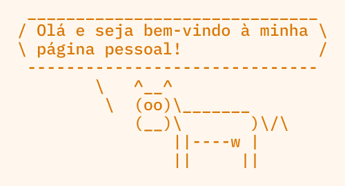

|
 |
João MartinhoEmail: joamartinho@yahoo.com Chave PGP: clique aqui ou rode
Perfil no GitHub: github.com/martinhojoao |
O meu nome é João e sou bacharel em ciência da computação pela FURB. Você dificilmente encontrará fotos minhas na internet, mas é só porque não gosto muito de tirar fotos. Eu garanto que sou uma pessoa real!
Esta é uma lista dos meus assuntos favoritos. Sinta-se à vontade para me enviar um email sobre algum deles.
Até hoje, o meu único projeto pessoal que vale a pena mencionar é o Orbe. É uma aplicação web construída com Spring Boot e HTML/JavaScript simples que eu criei como o meu TCC em 2025. O propósito do Orbe era ajudar os professores e alunos do meu departamento a lidar com a troca de documentos exigida pelo processo de elaboração de um TCC. Caso alguém queira saber, o nome Orbe não é uma sigla, mas uma palavra que significa o mesmo que esfera ou globo. No contexto do meu projeto, não tem sentido específico, mas é só um nome que eu achei sonoro e simples.
Eu também tenho uma ideia para um software de controle de versionamento semelhante ao Git que rastreie mudanças em arquivos binários, da mesma maneira que o Git faz com arquivos de texto simples. Até já tenho um nome: BinKeeper (paródia do antigo BitKeeper). Eu acho que seria útil, mas mal sei por onde começar; então, se você quiser roubar a ideia, pode ficar à vontade. :)
Eu uso este espaço para compartilhar algumas ferramentas e recursos que encontrei na internet.
Esta é uma lista de alguns textos que eu considero interessantes ou construtivos. Sugestões são bem-vindas!
A melhor maneira de entrar em contato comigo é por email. Se você quiser criptografar a mensagem, use a minha chave PGP
pública. A impressão digital da chave é AA44 B9C4 F8B6 9351 ACE2 620C 481A ACF8 C3C6 0F5F.